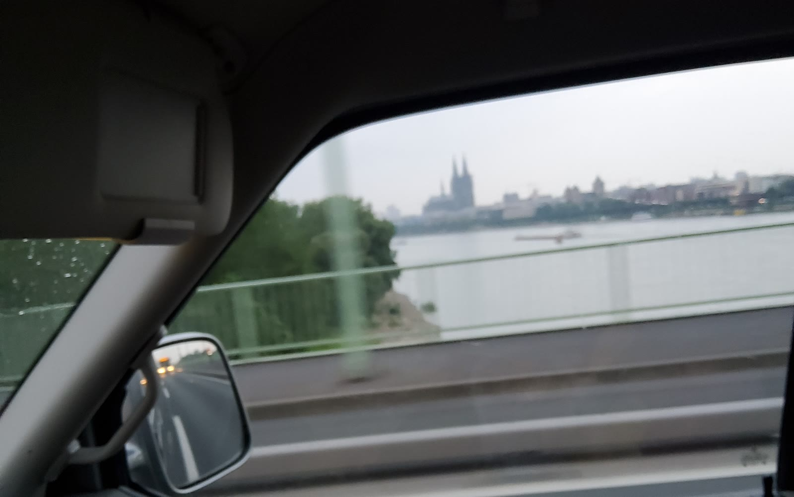

Tschüss Köln, hallo Europa: 6 Wochen, 4 Gänge und das pure Lebensgefühl
Hallo, hier ist Justine aus dem Tussy Van! 💛 Mitte August war es so weit: Der Bulli war gepackt, der Schlüssel steckte im Zündschloss, und in Köln hieß es einfach nur — Abfahrt! Vor mir lagen sechs Wochen absolute Freiheit, die mich einmal quer durch den Kontinent führen sollten: von den Alpen über die Kulturmetropolen Italiens bis ganz hinauf an die polnische Ostsee. Anfang Oktober schloss sich der Kreis wieder in Köln — nach einer Reise, die ich mein Leben lang nicht vergessen werde.

Es war die perfekte Zeit. Ein Spätsommer wie aus dem Bilderbuch, der mich bis in den Oktober hinein mit wunderschönem Wetter, unzähligen Geschichten und Bildern beschenkt hat, die man für immer im Herzen trägt.
Der Bodensee und ein Getriebe mit Charakter
Mein erster großer Stopp führte mich in den Süden an den wunderschönen Bodensee. Halt gemacht habe ich im idyllischen Langenargen und im faszinierenden Zeppelin Museum im nahen Friedrichshafen. Wer einmal dort war, weiß, wie beeindruckend diese Giganten der Lüfte sind.
Doch schon hier zeigte sich, dass dieser Roadtrip ein echtes Abenteuer werden würde. Mein ausgebauter T4 — damals noch mein erster Bus, angetrieben von einem kräftigen V6-Motor — entwickelte plötzlich eine ganz eigene Persönlichkeit: Der fünfte Gang verabschiedete sich komplett. Was macht man da? Umdrehen? Auf keinen Fall! Ich hatte ja noch vier andere. Und so bin ich eben mit maximal vier Gängen durch ganz Europa getuckert. Wer braucht schon den fünften Gang, wenn man ohnehin die Langsamkeit des Reisens zelebrieren will?
So sind wir gefahren.
scroll — und der Bulli fährt die Strecke ab!Köln → Bodensee → Genua · Pisa · Florenz · Rom · Venedig → Tschenstochau · Krakau · Danzig → zurück nach Köln
Bella Italia: Von der Küste zu den Kulturperlen
Mit vier Gängen ging es über die Berge. Italien empfing mich mit offenen Armen und dieser unvergleichlichen Leichtigkeit. Meine Route war ein absoluter Traum:
- Genua — die stolze Hafenstadt mit ihren engen Gassen.
- Pisa — natürlich durfte der obligatorische Blick auf den Schiefen Turm nicht fehlen.
- Florenz — das Herz der Toskana, Kunst und Kulinarik an jeder Ecke.
- Rom — die Ewige Stadt hat mich mit ihrer jahrtausendealten Geschichte überwältigt.
- Venedig — die magische Stadt im Wasser als krönender, romantischer Abschluss meines Italien-Abenteuers.
Kurs Nordost: Kultur und Meer in Polen
Nach dem mediterranen Flair habe ich die Richtung gewechselt und Polen angesteuert. Die Vielfalt, die dieser Kontinent bietet, ist einfach unfassbar. Erster Halt war der historische Wallfahrtsort Tschenstochau (Częstochowa), gefolgt vom wunderschönen Krakau — einer Stadt voller Leben, junger Kultur und beeindruckender Architektur. Doch es zog mich noch weiter nach oben, dem Ruf des Nordens folgend, bis ganz an die Ostseeküste nach Danzig (Gdańsk). Diese Stadt kenne ich besonders gut — meinen ehrlichen Blick auf Danzig, die Dreistadt und das Bernstein-Gold liest du hier →
Das wahre Camper-Glück
Was bleibt hängen nach sechs Wochen und Tausenden von Kilometern? Es sind nicht nur die berühmten Sehenswürdigkeiten. Es ist das Gefühl, morgens die Schiebetür des T4 aufzuschieben und direkt aufs glitzernde Meer zu blicken. Es ist die Ruhe, wenn man abends mitten im Wald steht, den Duft der Natur einatmet und die Silhouette der Berge im Abendlicht betrachtet.
Diese Reise hat mir gezeigt, wie reich dieser Kontinent an Landschaften, Kulturen und Eindrücken ist. Und dass man für das ganz große Glück im Leben manchmal eben nur vier Gänge und die richtige Begleitung braucht. Europa, du warst wunderschön!
Bis bald und immer gute Fahrt,
eure Tussy 💛